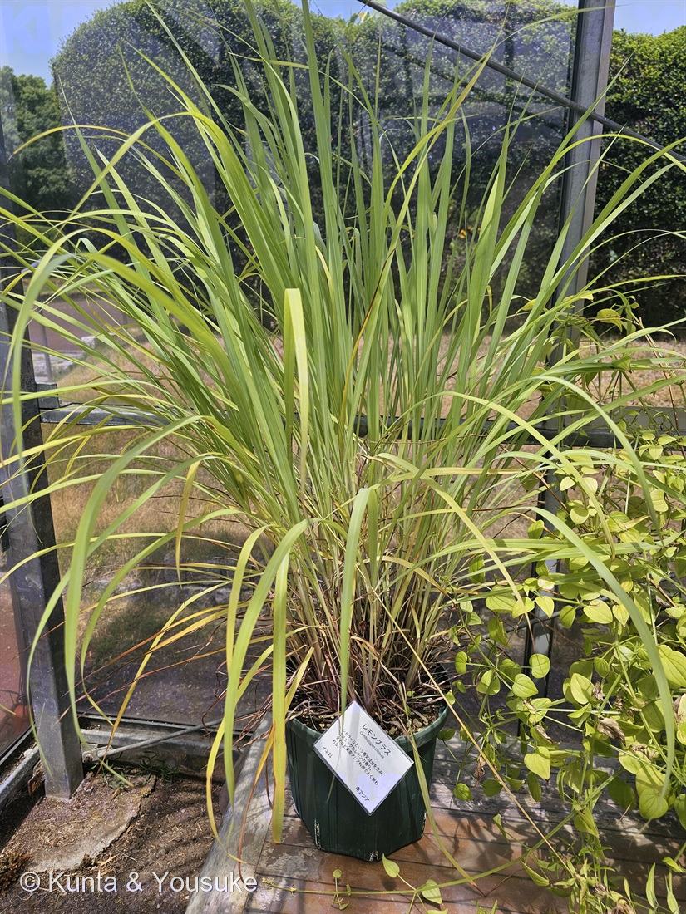

地図を読み込んでいるよ…
🔍 写真も地図も、押しているあいだ拡大して見られるよ（スマホは指を置いてすこし待ってね）。
🌍 の地図＝この子がもともと自生している場所を緑に。⚠野生の株が知られていないので、ふるさとが確定していない。おそらくスリランカかマレーシア（Useful Tropical Plants）／南アジアと島嶼部東南アジア＝マレシア（英語版Wikipedia）／インド原産・おそらくマレーシア原産（日本語版Wikipedia）／園のラベルは「南アジア」。
⚠⚠⚠この地図は、これまででいちばん自信のない一枚だよ。——⭐⭐⭐この草には、野生の姿が知られていないんだ。Useful Tropical Plants は「A tropical plant, not known in the wild, but probably originating in Sri Lanka or Malaysia（熱帯の植物だが、野生では知られていない。おそらくスリランカかマレーシア原産）」とし、生育地の欄にも「Not known in a wild situation.（野生の状態では知られていない）」と書いている。⚠ほかの出典もばらばら＝英語版Wikipediaは「南アジアと島嶼部東南アジア（マレシア）」、日本語版Wikipediaは「インド原産」と書いたうえで「おそらくマレーシア原産」ともいい、広島市植物公園のラベルは「南アジア」とする。⭐だからこの緑は、出典が名前を挙げた「南アジア」と「マレシア（島嶼部東南アジア）」を、両方まとめて塗ったもの——⚠「このへんのどこか、たぶん」というぐらいの意味で見てね（199 ケイトウと同じやり方だよ）。⭐⭐⭐そして、なぜふるさとが分からないのか——この草はめったに花を咲かせず、種もできず、株分けでしかふえないから。⭐⭐いま地球上にあるレモングラスは、ぜんぶ人が株を割って運びつづけた結果で、その旅の出発点が、もう誰にも指させなくなっているんだ。⭐種でふえない子が人に運ばれて広がるのは、053 シャガと同じ——⚠ちがうのは、シャガは日本じゅうで、この子は世界じゅうだということ。
⚠ 地図は国（日本と中国だけ県・省）までしか塗れないから、ほんとうの分布より広く見えていることがあるよ。地図はだいたいの場所。正確なところは、上の文を見てね。
レモングラス
Cymbopogon citratus (DC.) Stapf
レモンガヤ（檸檬茅）／レモンソウ（檸檬草）／コウボウ（香茅）／英名 West Indian lemongrass
イネ科 · Poaceae（オガルカヤ属）── 022エノコログサ・136トウモロコシ・144オヒシバ・166スズメガヤのなかま・185タカノハススキ・193ジュズダマに続く7人目のイネ科。オガルカヤ属は図鑑ではじめて
燻太さんの一言「見た目はただのイネにしか見えないね」──ほんとうにそのとおり。でもこの子は、「ただのイネ」ですらなかったんだ
名前と学名の由来 ── 舟に、ひげ
- ⭐⭐⭐属名 Cymbopogon は、ギリシャ語の「舟」と「ひげ」をつなげた名前。英語版Wikipediaは「kymbe (κύμβη, 'boat') and pogon (πώγων, 'beard')」とし、ほとんどの種で、舟のような形をした苞から毛だらけの小穂が突き出すことによる、と説明している。
- 種小名 citratus ＝「レモンのような」（citrus から）。⭐属名が「体のつくり」を、種小名が「におい」を言っているんだね。
- 和名はレモングラス。別名に「レモンガヤ（檸檬茅）」「レモンソウ（檸檬草）」「コウボウ（香茅）」（日本語版Wikipedia）。⭐どれも「レモン」か「香り」＋「かや・草」＝におう草、という言い方だよ。
- ⭐⭐⭐でもね。この子で「舟」と「ひげ」を見ることは、たぶん一生ない。——⚠この草は、めったに花を咲かせないんだ（すぐ下の節で書くね）。⭐属名がほめている作りを、本人はほとんど作らない。⏳だからおまけは、その「舟とひげ」を見せてくれる子にしたよ。
この植物のこと ── 「ただのイネにしか見えない」の、その先
⭐ 燻太さんは、この写真を見てこう言った。
「見た目はただのイネにしか見えないね。」
⭐⭐ そのとおり。——幅の広い線形の葉、白っぽい中肋、株立ちの姿。どこから見てもイネ科の草だよ。イネ科オガルカヤ属の多年草で、高さは1.5mほど、葉は1mにもなる（日本語版Wikipedia）。短い根茎から、かたい稈がたくさん出て、大きな株をつくる（Useful Tropical Plants）。
⭐⭐⭐ でもね、調べていくうちに、ぼくはこう思うようになった。——この子は、「ただのイネ」ですらないんだ。
- ⚠この草は、めったに花を咲かせない。「The plant seldom flowers.（この植物はめったに開花しない）」（Useful Tropical Plants）。英語版Wikipediaも「seed propagation is inefficient due to its rare flowering and fruiting（開花も結実もまれなので、種でふやすのは効率が悪い）」とする。
- ⚠だから、種でふえない。ふやし方は「Division of established clumps（育った株を割る）」＝⭐株分けだけ。商業栽培では「4〜6年ごとに株を割る」（同）。
- ⚠⚠⚠そして、いちばん驚いたのがこれ。——「A tropical plant, not known in the wild（熱帯の植物だが、野生では知られていない）」「Habitat: Not known in a wild situation.（生育地：野生の状態では知られていない）」（Useful Tropical Plants）。
⭐⭐⭐ この草には、野生の姿がない。
世界じゅうのお店にならんで、タイ料理にもハーブティにも入っているのに、「もとはここに生えていました」という場所を、誰も指させない。⭐だから園のラベルの「南アジア」も、Useful Tropical Plants の「おそらくスリランカかマレーシア」も、ぜんぶ推定なんだ。
⭐⭐ つまり、いま地球上にあるレモングラスは、ぜんぶ「人が株を割って、運びつづけた結果」。——⭐この鉢の株も、そのつながりの先っぽにいる。
⭐ この図鑑には、もう似た子がいるよ。053 シャガは三倍体で種ができず、クローンのまま人に運ばれて日本じゅうに広がった子だった。⭐⭐シャガは日本じゅう。レモングラスは世界じゅう。——⭐やっていることは同じで、規模だけがちがう。
同定について ── 園が教えてくれた名前と、ぼくが引っかかった一点
⭐ この子の名前は、園が教えてくれた。足もとのラベルに「レモングラス／Cymbopogon citratus／イネ科／南アジア」と書いてある。200 バオバブと同じで、これは同定というより読んだに近いね。
写真の側の裏づけは3つ。
- ⭐①短い根茎から、かたい稈がたくさん出て、大きな株になっている（叢生）。
- ⭐②幅の広い線形の葉が、中ほどから外へ大きく垂れる。
- ⭐③白っぽく太い中肋が、葉のまんなかを一本走っている。
⚠⚠ そのうえで、引っかかった点を1つ、消さずに残しておくね。
⭐ 株もとを拡大したら、枯れた古葉のあいだから、つやのある紫色の葉鞘がのぞいていた。——⚠これを「東インドレモングラス（C. flexuosus）のほうの特徴で、C. citratus には紫がかった茎はない」と書いているページがある。
⚠⚠ でも、そのページは出典を1つも示していない。それどころか、書いた本人が「同じ記述が何度も同じ形で出てくるので、たがいに写し合っているのではないかと疑っている」と書いていた。——⭐だから、これは判断材料にしなかったよ。
⭐⭐ この図鑑のやり方は、087 ヤマモモで決めたとおり。「自分の違和感を、自分で流さない」——でも、「ちゃんとした出典がないものを、根拠にしない」。⭐だから、園のラベルの名前で登録して、紫のことは宿題にしておくね。
⭐⭐⭐ レモンじゃないのに、レモン ── そして、ミツバチの合図
⭐ この草の「レモン」は、見た目のどこにもない。分子の中にある。
園のラベルはこう書いている ── 「シトラールという香気成分を含み、エスニックなレモンの香り。」英語版Wikipediaは「Lemon grass oil contains 65–85% citral（レモングラス油はシトラールを65〜85%含む）」とする。⭐精油の三分の二以上が、その一種類なんだ。
⭐⭐⭐ ここが面白いところ。
- レモン ＝ ミカン科（双子葉植物）
- レモングラス ＝ イネ科（単子葉植物）
⭐⭐ まったく別の家の子が、同じ匂いの分子にたどりついている＝🧬他人の空似の、においバージョン。⭐目で見ても絶対に気づけない「そっくりさん」だよ。
⭐⭐⭐ そして、もっと不思議なことがあった。
ミツバチには「ここに集まれ」と伝えるための匂いがある。お尻のナサノフ腺から出す匂いで、英語版Wikipediaは成分を「geraniol, nerolic acid, citral and geranic acid（ゲラニオール、ネロール酸、シトラール、ゲラニウム酸）」と挙げ、人工のものは「citral and geraniol in a 2:1 ratio（シトラールとゲラニオールを2:1で）」と書いている。
⭐⭐ シトラール。——レモングラスの精油の、いちばん多い成分と同じ。
だから養蜂をする人は、レモングラスの油を分蜂群のおとりに使う（英語版Wikipedia「Cymbopogon」＝「beekeeping applications where lemongrass oil mimics honeybee pheromones」）。
⚠ でも、ここでいちばん引っかかるのはここなんだ。
⭐⭐⭐ イネ科は風媒花。——136 トウモロコシも193 ジュズダマも、風にまかせて花粉を飛ばす。⭐虫を呼ぶ必要が、まったくない仲間だよ。なのにこの草の葉は、ミツバチの「集まれ」の合図と同じ分子を、たっぷりためている。
⚠⚠ 正直に書くね。「レモングラスがミツバチを呼ぶためにシトラールを作っている」と書いた出典には、ぼくは当たれなかった。⭐たぶん、これは偶然そろっただけ——植物が虫よけや身を守るために作った分子が、たまたまハチの合言葉と重なっていた、ということだと思う。⚠でも「たぶん」は「たぶん」なので、ここまでにしておくね。
⭐ この図鑑には、似た形の話が2つある。046 サルビアの赤は「来ない客への看板」、191 フィカス・ウンベラータの花嚢は「来ない客への扉」だった。⭐⭐この子は、そのどちらでもない——呼ぶつもりのない合図。⭐誰にも向けていない匂いが、よその生きものの合言葉とぶつかっているんだ。
⭐⭐ 香りの小道に、イネ科が二人目
⭐⭐⭐ 166 スズメガヤのなかまのページに、ぼくはこう書いていた ──
「イネ科といえば、稲や麦や、エノコログサみたいな『においのない草』だと思っていた。」
そして166が、🌬️香りでつながる の小道で、イネ科のはじめての一人になった（2026-07-28）。⭐この子が、二人目だよ。
⭐⭐ でも、二人はまるで逆なんだ。
- 166コスズメガヤ（候補） ── ⭐燻太さんが実際に嗅いで「何とも言えない悪臭のようなもの」。⭐においは弱くて、しかも、くさい。
- 201レモングラス ── ⭐世界じゅうの人が、そのにおいのためだけに育てている草。
⭐⭐⭐ 同じイネ科で、においが「見つけるのに苦労するくさみ」と「その草の存在理由」の両はしにいる。
そして、においのしまい方も少しちがうみたい。
- 166スズメガヤ属＝「腺点」（葉鞘・節の下・花序の枝などに、においの粒がならぶ）。
- 201レモングラス＝葉の中の細胞。Martins ら2004 は、この草の葉に「prickle-hair（葉脈の上に立つ、とがった単細胞の毛）」と「micro-hair（長い基部細胞と卵形の先端細胞からなる二細胞の微毛）」があることを報告している。⚠ただしこの論文の要旨は、油がどの細胞にあるかまでは書いていない。
- ⭐近縁のマレバレモングラス（C. flexuosus）では、そこが調べられていた。Luthra ら2007 は「single oil-accumulating cells were detected in the adaxial side of leaf mesophyll commonly adjacent to non-photosynthetic tissue and between vascular bundles（葉の表側の葉肉に、光合成をしない組織のとなり・維管束のあいだに、油をためた単独の細胞が見つかった）」とする。⚠⚠これは別の種の話なので、⭐「レモングラスの仲間は、毛ではなく葉の中の細胞に油をためているらしい」というところまでにしておくね。
⭐ 触るとざらつくのは、たぶん prickle-hair のほう。⚠イネ科の葉のふちで手が切れることがあるから、さわるならそっとね。
⭐⭐ 41分まえ ── 同じ朝に、「花に会えない理由」がちがう二人に会っていた
⭐⭐⭐ この写真の撮影時刻は 2026年8月8日 11時03分27秒。——⭐200 オーストラリアバオバブの 11時44分02秒 の、41分まえだった。
⭐ 同じ朝、同じ広島市植物公園。⭐ハーブのビニールハウスから大温室へ、41分かけて歩いた燻太さんの足あとが、写真のEXIFに残っている。
⭐⭐⭐ そして、この二人にはふしぎな共通点があった。——どちらも、燻太さんは花に会えていない。
- 200バオバブ ── ⭐花は咲く。でも夜に開く（英語版Wikipedia「The flowers open at night」）。⭐昼に来た人には、会えない。
- 201レモングラス ── ⚠そもそも、めったに咲かない。⭐夜に来ても、会えない。
⭐⭐ 同じ朝に、「見られない理由」がぜんぜんちがう二人にならんで会っていたんだね。——⭐バオバブのは時計の問題で、レモングラスのは、この草がもう花をやめかけている、という問題。
参考：Useful Tropical Plants・Cymbopogon citratus（A tropical plant, not known in the wild, but probably originating in Sri Lanka or Malaysia／Habitat: Not known in a wild situation.／aromatic, evergreen, densely clump-forming, perennial grass 約1.5m／short rhizomatous rootstock／The plant seldom flowers.／Seed - not often produced. Division of established clumps／4〜6年ごとに株を割る／Known Hazards: None known）／Cymbopogon citratus - Wikipedia（英語版）（native to South Asia and Maritime Southeast Asia (Malesia)／seed propagation is inefficient due to its rare flowering and fruiting／Lemon grass oil contains 65–85% citral／bluish-green leaves with entire margins, linear／West Indian lemon grass）／Cymbopogon - Wikipedia（英語版）（kymbe (κύμβη, 'boat') and pogon (πώγων, 'beard')／約52種／citronella grass = C. nardus, C. winterianus／East Indian lemongrass = C. flexuosus／beekeeping applications where lemongrass oil mimics honeybee pheromones）／レモングラス - Wikipedia（日本語版）（イネ科オガルカヤ属の多年草／レモンガヤ・レモンソウ・コウボウ（香茅）／高さ1.5mほど・葉は長さ1mにもなる／シトラールを含有／インド原産・おそらくマレーシア原産）／Nasonov pheromone - Wikipedia（英語版）（geraniol, nerolic acid, citral and geranic acid／人工のものは citral and geraniol in a 2:1 ratio／働きバチが腹をあげて羽で扇いで広げる）／三河の植物観察・オガルカヤ（イネ科 Poaceae オガルカヤ属／Cymbopogon goeringii (Steud.) A.Camus／丘陵、河原の土手／花期8〜11月／50〜100cm／葉は長さ15〜40cm・幅3〜5mm／茎は無毛、平滑、細くて硬く、叢生する／花序は舟形の苞の先に2個の枝（総）を左右に開いて小穂を数個ずつつける特徴的な形／雄性小穂は長さ4〜6.5mm、花梗には白毛が密生する）／Martins, Martins, Telascrêa & Cavalheiro (2004) Anatomical characterization of leaf of Cymbopogon citratus (DC.) Stapf (Poaceae) and chemical profile of the essential oil. Revista Brasileira de Plantas Medicinais 6(3): 20-29.（prickle-hair（葉脈の上の、とがった単細胞の毛）／micro-hair（長い基部細胞＋卵形の先端細胞）／機動細胞は葉の表側／大きな維管束は厚壁組織の鞘に包まれ両面の表皮に達する）／Luthra, Srivastava & Ganjewala (2007) Histochemical Localization of Citral Accumulating Cite in Lemongrass (Cymbopogon flexuosus) Wats Cultivar OD-19. Asian Journal of Plant Sciences 6(2): 419-422.（⚠こちらは C. flexuosus の研究／single oil-accumulating cells were detected in the adaxial side of leaf mesophyll commonly adjacent to non-photosynthetic tissue and between vascular bundles）／広島市植物公園のラベル（レモングラス／Cymbopogon citratus／シトラールという香気成分を含み、エスニックなレモンの香り。タイなど東南アジア料理でよく使われる。／イネ科／南アジア）